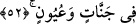
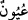

sözleri gibi. Bahru’l-‘ulûm’da böyle geçer.
Âyette şöyle işâret vardır: Kim mâsivâdan uzak olup Allah’a muttakî olursa, makamı
vahdet makamı olur. O kimse ikilik endişesinden emin olur. Yine kim dünyâda azap
endişesi ve ayrılık korkusu ile yaşarsa âhirette emniyet ve himâye içinde olur. Bazıları
şöyle demiştir: Makam-ı emin, peygamberler, velîler, sıddîklar ve şehidlerle beraber
oturmaktır.
Fakir (Bursevî) der ki: Mahşer günü bu sâlih insanlarla beraber oturmak şerefli bir
durumdur. Çünkü o gün onlarla beraber olan kişi azâbın vukuundan emîn olacaktır. Zîra
bunlar Allah katında şefâatçidirler. Dünyâda bu sâlihlerle beraber olmaya gelince,
bunda da kötülükten emîn olma vardır. Çünkü bunlarla beraber olanlar asla mücrim
olamaz.
Âyette kalbe düşen bir işârî mânâ daha vardır ki o da şudur: Makam-ı emîn kalp
makamıdır. Bu ise vuslat cennetidir. Bu makama giren, pusuya yatmış şeytanın
vesvesesinden emin olur. Çünkü şeytan, zât makamına işâret olan Kâbe’ye giremez.
Aynı şekilde şeytan zât-ı ahadiyette fânî olmanın işâreti olan secde hâlinde de vesvese
veremez.
Ehl-i sünnet şöyle demiştir: Şirkten sakınan herkes muttakî kapsamına dâhildir. Böyle
olunca bu vaad, fâsıkları da içine almaktadır.
Fakir (Bursevî) der ki: Zâhir olan şudur ki mutlak bir ifade, ancak karîne yoluyla
kemâline hasredilir. Buradaki makam cömertlik makamıdır. Bu işin kemâli itâatkâr
mü’mindir. Buna âyetin başında işâret edilmiştir. Evet, son tahlilde ve itâatkâr
mü’minlere tâbî olmak kaydıyla âsî mü’minler de buna dâhildir. Ancak başlangıçta ve
asâleten dâhil olamazlar. Onlar hakkındaki tehdîd buna delâlet etmektedir. Aksi takdirde
itâatkâr olan mü’minle âsî olan, eşit olurdu.
Allah Teâlâ şöyle buyuruyor: “Yoksa korunanları yoldan çıkanlar gibi mi
tutacağız?” (Sâd, 38/28) Allah bizleri, sizleri, hepimizi affetsin.
Şeyh Sâdî şöyle demiştir:
Neden eline taşla sopa verirsin? Efendinle kavga edenin
Köpek, kim ki sofra kurarsın ona söyle kemik atsınlar onun önüne
52. Bahçelerde ve çeşme başlarında.
Bu ifâde makam kelimesinden bedeldir. O makamın sahasının nezihliğine ve nice hoş
yiyecek ve içeceğe şâmil olduğuna delâlet için getirilmiştir. “
/Uyûndan” murâd ise
akan ırmaklardır. Nekre oluşu tâzîm içindir.